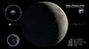

libration

Definition: In lunar astronomy, libration is the cyclic variation in the apparent position of the Moon perceived by Earth-bound observers and caused by changes between the orbital and rotational planes of the moon. It causes an observer to see slightly different hemispheres of the surface at different times. It is similar in both cause and effect to the changes in the Moon's apparent size due to changes in distance. It is caused by three mechanisms detailed below, two of which cause a relatively tiny physical libration via tidal forces exerted by the Earth. Such true librations are known as well for other moons with locked rotation.
Source: Wikipedia
Wikipedia Page (Something wrong with this association? Let us know.)
Wikidata Page (Something wrong with this association? Let us know.)